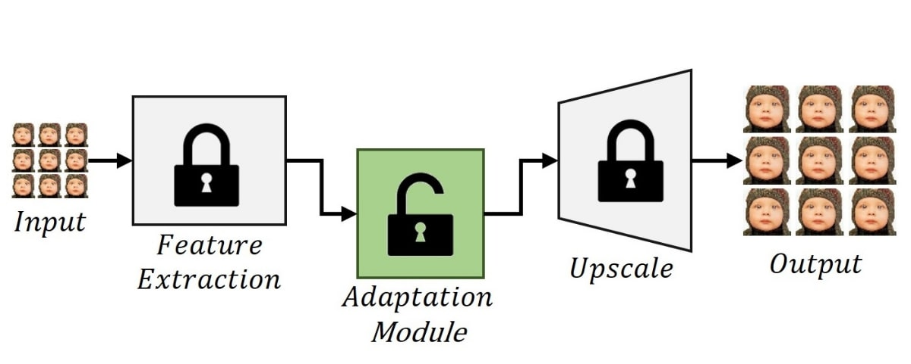
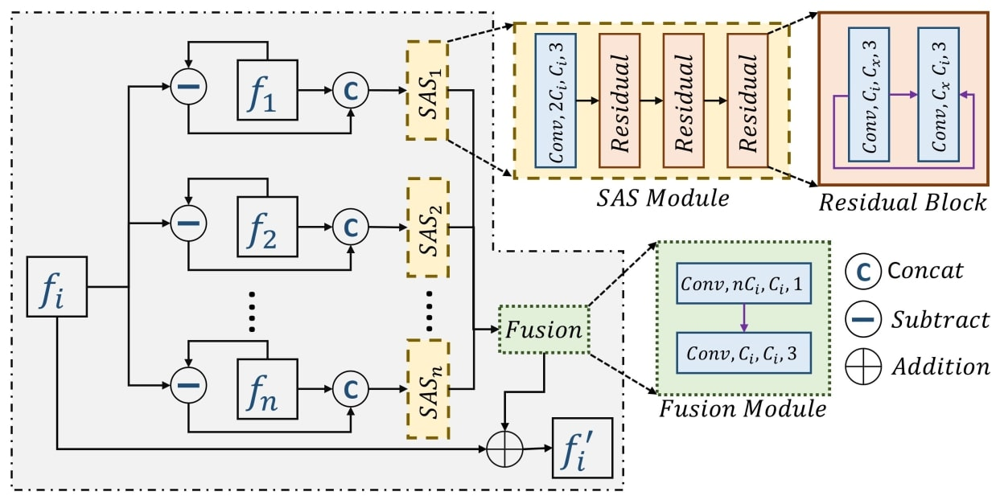
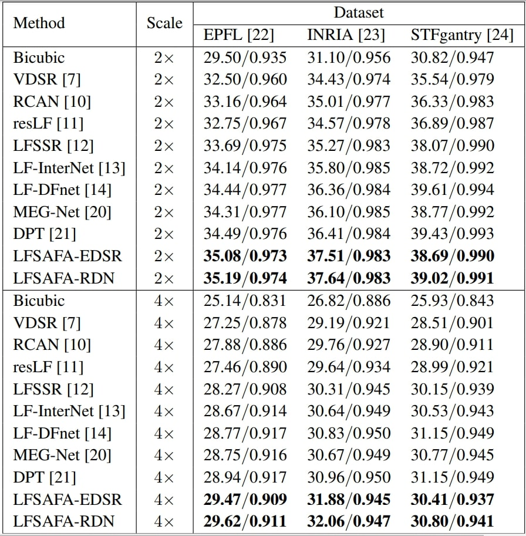
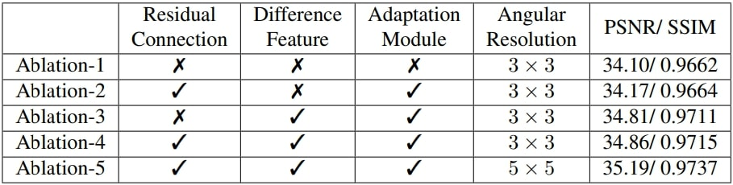
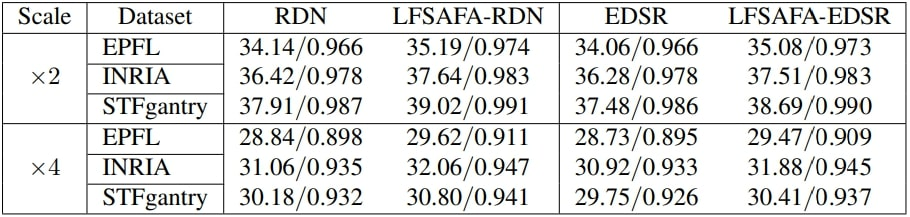
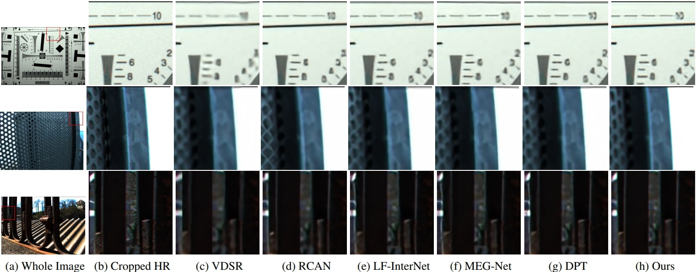

With the availability of commercial Light Field (LF) cam- eras, LF imaging has emerged as an up-and-coming tech- nology in computational photography. However, the spatial resolution is significantly constrained in commercial micro- lens-based LF cameras because of the inherent multiplexing of spatial and angular information. Therefore, it becomes the main bottleneck for other applications of light field cameras. This paper proposes an adaptation module in a pre-trained Single Image Super-Resolution (SISR) network to leverage the powerful SISR model instead of using highly engineered light field imaging domain-specific Super Resolution models. The adaption module consists of a Sub-aperture Shift block and a fusion block. It is an adaptation in the SISR network to further exploit the spatial and angular information in LF images to improve the super-resolution performance. Exper- imental validation shows that the proposed method outper- forms existing light field super-resolution algorithms. It also achieves PSNR gains of more than 1 dB across all the datasets as compared to the same pre-trained SISR models for scale factor 2, and PSNR gains 0.6 − 1 dB for scale factor 4.





@misc{kar2022subaperture,>
title={Sub-Aperture Feature Adaptation in Single Image
Super-resolution Model for Light Field Imaging},
author={Aupendu Kar and Suresh Nehra and Jayanta Mukhopadhyay and
Prabir Kumar Biswas},
booktitle={2022 IEEE International Conference on Image Processing (ICIP)},
year={2022},
organization={IEEE}
}